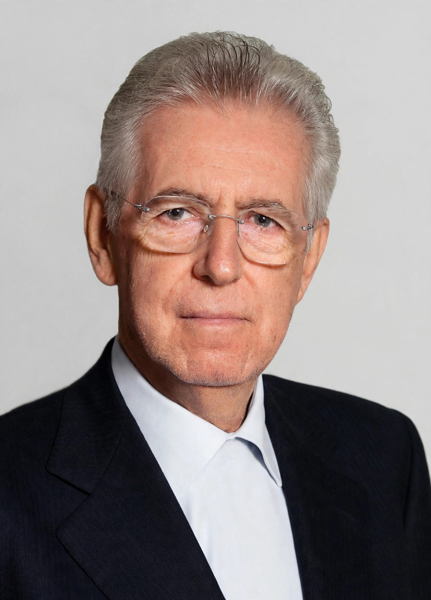

Mario Monti

| Mario Monti | |
|---|---|
| Prime Minister of Italy | 16 November 2011 – 28 April 2013 |
| Preceded by | Silvio Berlusconi |
| Succeeded by | Enrico Letta |
| European Commissioner for Competition | 1999 – 2004 |
| European Commissioner for Internal Market | 1995 – 1999 |
| Born | 19 March 1943, Varese, Italy |
| Profession | Economist |
Mario Monti OMRI (born 19 March 1943) is an Italian economist and academic who served as the Prime Minister of Italy from November 2011 to April 2013, leading a technocratic government during the European sovereign debt crisis. He previously served as a European Commissioner from 1995 to 2004, responsible first for the internal market and then for competition policy, where he gained a reputation — and the nickname "Super Mario" — for taking on powerful corporate interests, including blocking the GE–Honeywell merger and pursuing Microsoft.
Early life and academic career
Monti was born in Varese, Lombardy. He studied economics at Bocconi University in Milan and completed postgraduate studies at Yale University, where he worked with James Tobin. He became a professor of economics, teaching at the University of Turin and then at Bocconi, whose rector (president) he became in 1989 and president in 1994. He founded the Innocenzo Gasparini Institute for Economic Research at Bocconi.
European Commissioner
In 1995 Monti was appointed to the Santer Commission as Commissioner for Internal Market, Financial Services and Taxation. In 1999 he moved to the competition portfolio in the Prodi Commission. As competition commissioner he launched the case against Microsoft that led to the 2004 decision imposing fines and requiring disclosure of interoperability information; he also prohibited the merger between General Electric and Honeywell in 2001, the first time a merger of two American companies approved by US authorities was blocked in Europe, and opened the state-aid case that ended Ireland's special tax treatment disputes of the era.
Prime Minister
In November 2011, as Italy's borrowing costs spiked during the eurozone crisis and Silvio Berlusconi resigned, President Giorgio Napolitano appointed Monti a senator for life and then asked him to form a government of technocrats. His cabinet — containing no elected politicians — introduced austerity measures, pension reform (the Fornero reform), labour-market changes, and liberalisation decrees under the slogan-bearing programmes "Save Italy", "Grow Italy", and "Simplify Italy". The reforms calmed bond markets but were unpopular, and Italy remained in recession.
Monti resigned in December 2012 after Berlusconi's party withdrew support, remaining as caretaker until the 2013 general election, in which he led the centrist Civic Choice coalition, winning roughly a tenth of the vote. He was succeeded by Enrico Letta. Monti has remained a senator for life and an influential commentator on European integration.